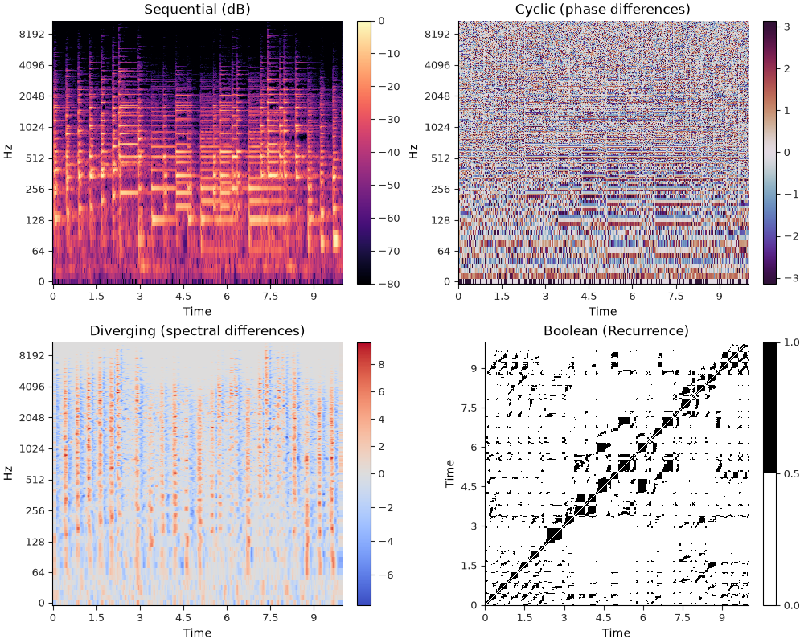
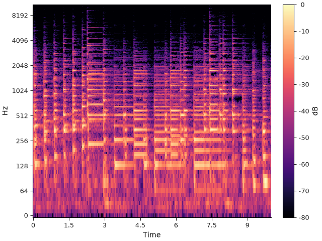
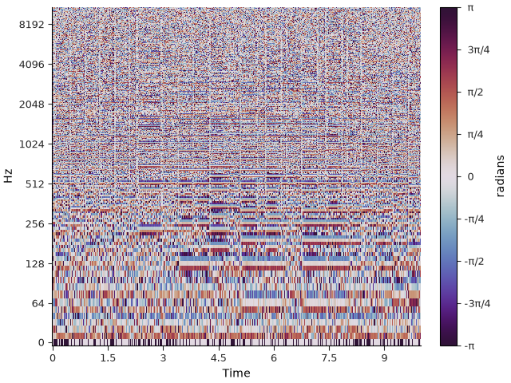
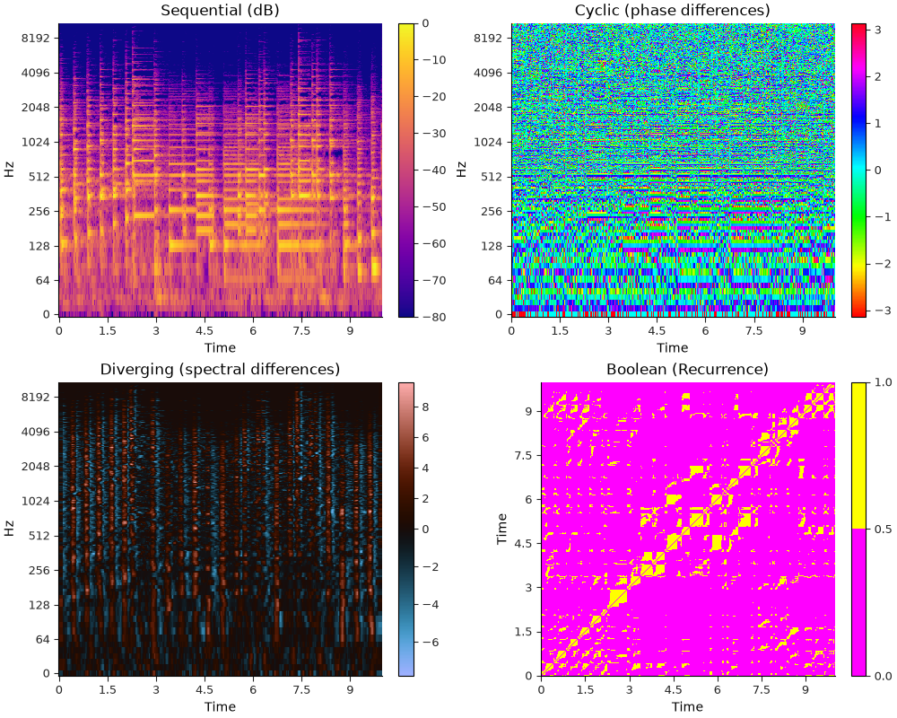
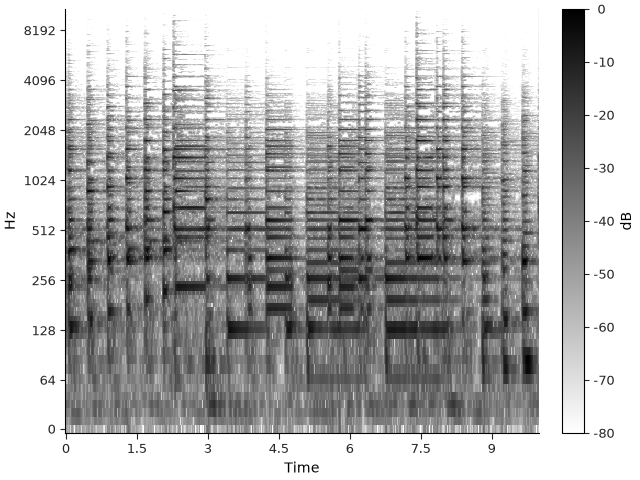
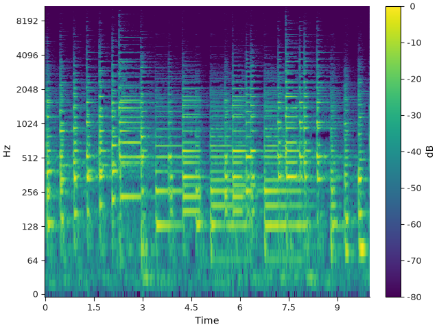
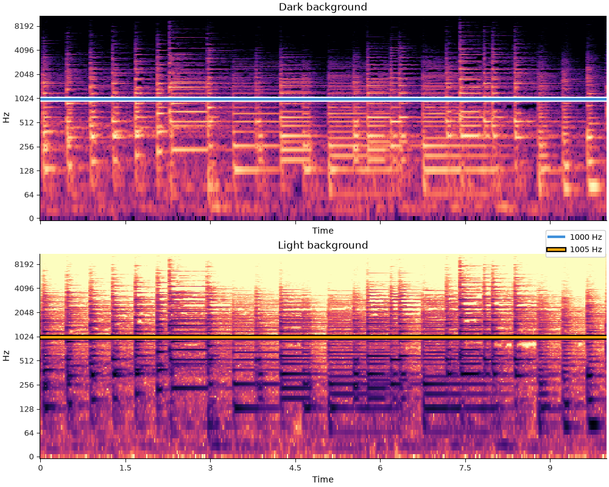

Note
Go to the end to download the full example code.
Using color effectively#
This section discusses in depth how librosa.display.specshow uses color to
represent data. It then provides some tips and tricks for making effective
visualizations with color.
Warm-up: matplotlib colormaps#
In matplotlib, a colormap is what tells the display how to translate a value
into a color displayed on screen.
For our purposes, we will focus on continuous colormaps that are used to smoothly
translate numerical data (e.g., decibel measurements) into colors without abrupt
jumps.
The matplotlib documentation
provides a good overview of the available colormaps and their intended uses.
Colormaps in librosa.display.specshow#
While matplotlib provides a general-purpose default colormap (usually viridis),
librosa.display.specshow ignores this default and instead infers a colormap based on the type of
data being displayed.
Specshow identifies four kinds of color data, with a distinct colormap used for each one:
Sequential data → magma
Diverging data → coolwarm
Boolean data → gray_r
Cyclic data → twilight_shifted
The first three can be automatically inferred by examining the statistics or numerical format of the data, using the following heuristics:
Sequential: The data is all positive or all negative.
Diverging: The data contains both positive and negative values.
Boolean: The data has a bool data type.
Note that setting vscale=’dB’ (or related decibel modes) will always fall back on the sequential colormap. Cyclic data is never inferred automatically, but is instead specified by setting vscale to a phase mode (e.g., phase or dphase).
If you’ve been reading through the previous sections of this tutorial, you’ve no doubt already seen examples that make use of this functionality. Here we can make a single figure that demonstrates all four in one place.
import librosa
import numpy as np
from IPython.display import HTML
import matplotlib.pyplot as plt
y, sr = librosa.loadx("pistachio", duration=10, offset=10)
HTML(librosa.util.example_info("pistachio", html=True))
# Compute an STFT (for sequential decibel values and cyclical phase values)
stft = librosa.stft(y)
# Compute spectral differences (for diverging ± values)
diffs = librosa.feature.delta(librosa.amplitude_to_db(np.abs(stft)))
# Compute a recurrence matrix (for boolean values)
rec = librosa.segment.recurrence_matrix(librosa.amplitude_to_db(np.abs(stft)), mode="connectivity")
fig, ax = plt.subplots(2, 2, figsize=(10, 8))
# Draw each of the subplots
i1 = librosa.display.specshow(stft, x_axis="time", y_axis="log", vscale="dBFS", ax=ax[0, 0])
i2 = librosa.display.specshow(stft, x_axis="time", y_axis="log", vscale="dphase", ax=ax[0, 1])
i3 = librosa.display.specshow(diffs, x_axis="time", y_axis="log", ax=ax[1, 0])
i4 = librosa.display.specshow(rec, x_axis="time", y_axis="time", ax=ax[1, 1])
# Add colorbars for each subplot
fig.colorbar(i1)
fig.colorbar(i2)
fig.colorbar(i3)
fig.colorbar(i4)
# Label each subplot
ax[0, 0].set_title("Sequential (dB)")
ax[0, 1].set_title("Cyclic (phase differences)")
ax[1, 0].set_title("Diverging (spectral differences)")
ax[1, 1].set_title("Boolean (Recurrence)")

Note
For diverging and boolean displays, specshow will also create a normalization object that is appropriate for the data type. This is why the diverging display example (bottom left) appears to have asymmetric scales for positive and negative values, but the neutral color (gray) is still centered at zero.
Similarly, the boolean display (bottom right) is automatically quantized to display only two colors.
Colorbars and colorbar helpers#
In the example above, we used fig.colorbar() to add a colorbar to each subplot,
which associates different colors with specific values in the data.
The default colorbar is fine for many purposes, but librosa.display also provides a few helper
functions for creating colorbars that are more tightly integrated with the data being displayed.
For example, librosa.display.colorbar_db is helpful for creating a colorbar that is labeled in decibels:
fig, ax = plt.subplots()
img = librosa.display.specshow(stft,
vscale="dBFS",
x_axis="time",
y_axis="log",
ax=ax)
librosa.display.colorbar_db(img)

Similarly, librosa.display.colorbar_phase is helpful for creating a colorbar for angular data (e.g., phase differences),
where the positions are labeled as fractions of π:
fig, ax = plt.subplots()
img = librosa.display.specshow(stft,
vscale="dphase",
x_axis="time",
y_axis="log",
ax=ax)
librosa.display.colorbar_phase(img)

Overriding colormap inference#
The default colormaps listed above can be configured by setting cmap_seq=, cmap_div=, cmap_bool=, or cmap_cyclic=. For example, we can redo the first example above using different colormaps for each of the four types but still selecting among them automatically:
cmaps = dict(
cmap_seq="plasma",
cmap_div="berlin",
cmap_bool="spring",
cmap_cyclic="hsv",
)
fig, ax = plt.subplots(2, 2, figsize=(10, 8))
# Draw each of the subplots
i1 = librosa.display.specshow(stft, x_axis="time", y_axis="log", vscale="dBFS", ax=ax[0, 0], **cmaps)
i2 = librosa.display.specshow(stft, x_axis="time", y_axis="log", vscale="dphase", ax=ax[0, 1], **cmaps)
i3 = librosa.display.specshow(diffs, x_axis="time", y_axis="log", ax=ax[1, 0], **cmaps)
i4 = librosa.display.specshow(rec, x_axis="time", y_axis="time", ax=ax[1, 1], **cmaps)
# Add colorbars for each subplot
fig.colorbar(i1)
fig.colorbar(i2)
fig.colorbar(i3)
fig.colorbar(i4)
# Label each subplot
ax[0, 0].set_title("Sequential (dB)")
ax[0, 1].set_title("Cyclic (phase differences)")
ax[1, 0].set_title("Diverging (spectral differences)")
ax[1, 1].set_title("Boolean (Recurrence)")

If you want to bypass automatic colormap selection, this can be done by setting cmap= directly:
fig, ax = plt.subplots()
img = librosa.display.specshow(stft, x_axis="time", y_axis="log", vscale="dBFS", cmap="gray_r", ax=ax)
librosa.display.colorbar_db(img)

Finally, if you want to bypass automatic colormap selection but still use the default colormap for your matplotlib configuration (without explicitly stating what it is), you can set cmap=None. Here, our documentation environment is configured to use viridis as the default colormap:
fig, ax = plt.subplots()
img = librosa.display.specshow(stft, x_axis="time", y_axis="log", vscale="dBFS", cmap=None, ax=ax)
librosa.display.colorbar_db(img)

Note that explicitly setting cmap will override all automatic colormap inference and normalization. This matters mainly for diverging and boolean data, but in general, it is recommended to use cmap_seq=, cmap_div=, cmap_bool=, or cmap_cyclic= to override the default colormaps while still preserving the automatic normalization behavior.
Highlighting#
Often, it can be helpful to add other plot elements over top of a spectrogram, such as an estimated pitch contour (as in our fundamental frequency example).
This can present a challenge for color selection because the colormaps typically used for continuous data tend to occupy a large portion of the color space, leaving few colors available that would generally stand out and be visible.
To get around this problem, librosa.display provides a general-purpose helper
function librosa.display.highlight that will add a highlight or shadow to a plot
element, making it more visible against the background image.
highlight can automatically detect whether the background is predominantly light or
dark, and will choose a contrasting shadow or highlight color accordingly.
For example, we can plot the same spectrogram data in both dark and light modes, and highlight a line element easily in both cases:
fig, ax = plt.subplots(2, 1, figsize=(10, 8), sharex=True, sharey=True)
librosa.display.specshow(stft, x_axis="time", y_axis="log", vscale="dBFS", ax=ax[0], cmap_seq="magma")
ax[0].set_title("Dark background")
line1 = ax[0].axhline(1000, color="C0", label="1000 Hz", linewidth=3)
hl2 = librosa.display.highlight(artist=line1, linewidth=6) # Add a highlight
librosa.display.specshow(stft, x_axis="time", y_axis="log", vscale="dBFS", ax=ax[1], cmap_seq="magma_r")
ax[1].set_title("Light background")
line2 = ax[1].axhline(1005, color="C1", label="1005 Hz", linewidth=3)
hl2 = librosa.display.highlight(artist=line2, linewidth=6) # Add a shadow
fig.legend(loc="center right")

Summary#
librosa.display.specshow has built-in support for automatically selecting
colormaps based on the type of data being displayed.
The display module also provides a few helper functions for creating colorbars
and highlighting plot elements.
All of these features are highly configurable and designed to interact well with
matplotlib to support simple construction of clear and effective displays.
Total running time of the script: (0 minutes 3.215 seconds)